How to build a Metamodel
Open Modules > Catalogs > Business Model Catalogue to create or maintain a model. Start with an available data source, define the exposed entities and relationships, then publish and test the model in QBE with the intended user roles.
In this chapter we go into details of how to build your own metamodel. Knowage allows to develop and manage metadata through the use of a web interface that is called Meta Web. We recall that dealing with metadata means to manage data that describe the structure of a relational model, namely to deal with the relationship between tables, table columns, keys and so on.
The Meta Web allows the user to access these information through the usage of a graphic interface and to easily combine, redefine and query them on an abstract model, guaranteeing the safety of the source model. In addition, we stress that the users can perform queries over data without the usage of a data query language.
Creating a Metamodel
Using the Meta Web application, it is possible to reverse the content of a database and manipulate this information creating a new model that can fit the user’s needs. In this section will we see what are the steps needed in order to create a metamodel and query it with the QBE.
To create a Metamodel enter the Business Model Catalogue and add a new model clicking on the “Plus” icon. Referring to next figure, you will be prompted to enter the following fields:
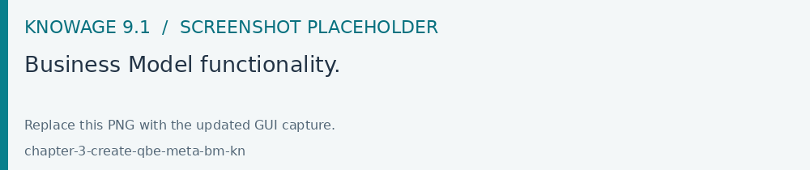
Fig. 411 Business Model functionality.
Name (mandatory): Name of the model (cannot be changed after the save).
Description: A longer description of your model.
Category (mandatory): Select, from the ones available, a category that the model belongs to.
Data Source (mandatory): select the datasource that will be used to create your model (so the one that contains the tables that you need).
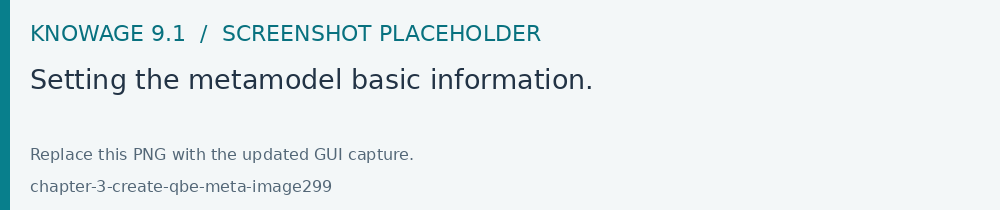
Fig. 412 Setting the metamodel basic information.
After you have compiled these information, you can use the browse button to upload a model developed through an external (and specific) tool or you can click on “Save” on the top right corner of the screen and use the Meta Web engine to build it through Knowage interface. Now click on the switch Enable Meta Web that will show up a button Meta Web, click on that and you are ready to design the model.
Association with analytical drivers
With this feature in Meta web is possible to create filters using associations with analytical drivers. In this section we will show how to practically define this kind of association.
To add a new parameter, you can click on the tab Drivers and then on a Add button, see the next figure.
Fig. 413 Association with analytical driver panel - 1.
Choose a name for the title of the driver. Then choose an analytical driver from drop-down menu that you wish to associate to the meta model.
Once you have selected the driver, you should write the exact URL of the corresponding parameter. Then set if the driver is multivalue or not. By default, drivers are set to be mandatory so you don’t have the option to change that like you have for analytical documents.
After you have completed the definition of a parameter you can save it by clicking on main Save button in the upper right corner. To add further parameters, click on the Add button. Repeat the same procedure as many times you want. At this point you may wish to change the order of parameters (i.e., how they are presented to the user). To do so, click on the arrow in the list of drivers.
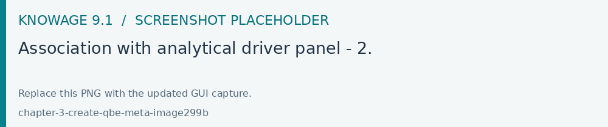
Fig. 414 Association with analytical driver panel - 2.
In the following chapter we will see some special operations that can be performed on drivers associated to a meta model.
Correlation between parameters
In the context of a meta model, two different parameters may be connected to each other: this means that the possible values of a parameter are limited by the value(s) of another parameter.
This feature can be useful when two (or more) parameters are logically related. For example, suppose to have a parameter for all the possible countries and another one for all the possible cities. If the user selects a country, it is meaningless to show him all cities: he should only be enabled to choose among the cities in the selected country.
To set the correlation, select the child parameter which will show you the details of that particular driver and then click on the Add condition button to open a pop-up window for defining a data correlation.
In general, to configure a correlation within a meta model you should make sure that the LOV associated with the parent parameter and the one associated to the child parameter share at least one column. This column defines which value from the parent parameter will be applied to the child, in order to constrain the results.
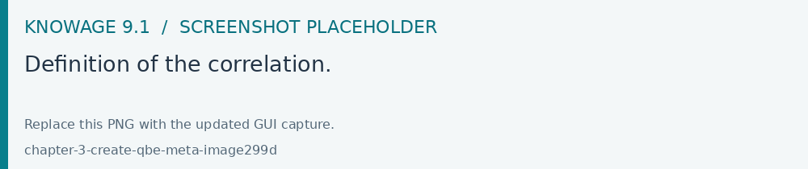
Fig. 415 Definition of the correlation.
Here you need to define:
the parent parameter’s AD;
the type of filter operator, in order to compare values of the parent parameter with values of the child parameter;
the logical operator to chain this correlation condition with other possibile correlation (if any)
(for each AD modality) the column, generated by the current parameter’s LOV, whose value will be compared with the value of the same column in the parent parameter.
If a parameter depends on multiple parent parameters, you can define multiple correlations.
Fig. 416 Multiple correlations.
Once the correlation is defined, the child parameters will have the labels displayed in italic during the execution (with QBE).
Correlation through LOV and drivers
In previous sections we saw how to set correlation through the GUI available in meta model panel, but there is also the possibility to get the same result using the link between LOV and analytical drivers. More in depth, the user must have previously configured a driver that runs values that can be used in the “where” clause of a SQL query. Then the user must set a query-type LOV using the syntax:
1 $P{AD_name}
We stress that the AD_name is the name of the driver the administrator is trying to reach.
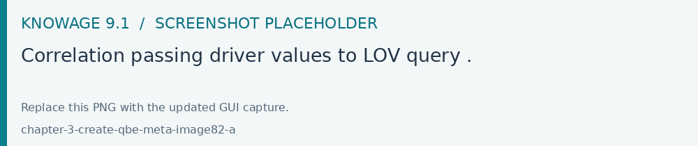
Fig. 417 Correlation passing driver values to LOV query .
As a result, when opening meta model, as soon as the user pick up a value from the “free” parameter, the other one is filtered and it will show only the value related to the previous selection, as shown in Figure below.
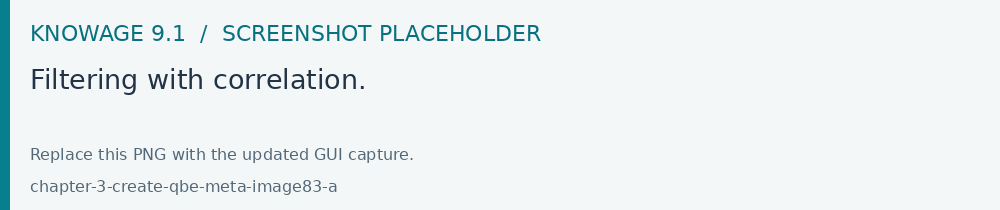
Fig. 418 Filtering with correlation.
Creating an empty model
The first time you enter the Meta Web, the interface will show you the available tables extracted from the selected data source.
Fig. 419 Metaweb interface.
For each table you can decide if you want to include it in your metamodel. More in detail a metamodel is divided in two model:
Physical Model: it represents a “snapshot” of the database at the moment of the creation of you metamodel. The physical model contains a list of tables and information like columns and foreign keys retrieved from the database. The Physical Model cannot be modified but could be updated to reflect changes made on the database after the creation.
Business Model: it is based on the physical model but let the user recombine some of his information. For example is possible to create a Business Class that contains only some of the columns of a Physical Table and create new relationships between Business Classes that are not defined on the physical database.
If you choose to include a table only in the physical model is always possible to create a corresponding business class later during the editing. When you have finished to select the tables you can proceed to the editing clicking on the Continue button.
Editing the metamodel
The Meta Web Editor is divided in two main tabs Business Model and Physical Model corresponding to the related models. Clicking on one of this tab will change the view showing the elements of the specific model.
The “Physical Model” tab contains the tables that the user has checked earlier. On the left side of the interface you will see a tree like structure with the list of tables imported in the Physical Model (see figure below).
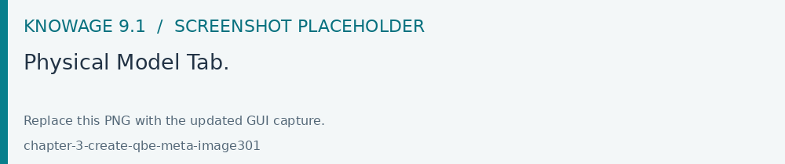
Fig. 420 Physical Model Tab.
Use the specific link to update the Physical Model at any time. Referring to the figure below, selecting the “Update Physical Model” option the user can refresh the model metadata.
Fig. 421 Update the physical model.
As shown below, the interface indicates if tables have been added or deleted to the datasource and lets the user to add tables to the Physical Model.
Fig. 422 Update the physical model.
Each table of Physical Model brings the information read from data base. Selecting each table, the interface shows on the right the list of its properties (Property List tab) and its foreign keys (Foreign Keys tab). Clicking on the icon on the left of each Physical Table, it is possible to expand the corresponding node. Highlight each column name to see (on the right side of the screen) a list of properties, like data type or length.
As shown below, the Business Model tab allows the user to custom the model in terms of column name, type, visibility, format, etc.
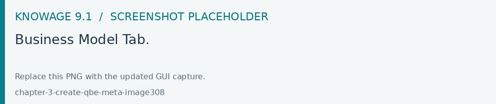
Fig. 423 Business Model Tab.
In this view, you see all the Business Classes created at the first initialization. The Business Classes are represented in a tree structure on the left side of the page. Clicking on them, generic information are reported in the six tabs available on the right side of the page. See below.
You can change the order of the business classes just by using the drag and drop functionality.
By means of the Property List tab, the user can customize the business class name, type a description and see the corresponding physical table name. Here the user can also choose to hide the business class setting its visibility to false. Furthermore, when specifying the business class type, the user activates some peculiar functions that can be used in the QbE interface we described in Section 9.1. For instance, selecting the geographic dimension, the user will be able to apply the spatial functions to the dimension fields available in the QbE interface.
The Attributes tab lets the user to define which columns to be used as primary keys and which are effectively functional for the Business Class (not to be confused with the visibility condition). Note that, for instance, it is not possible to disable the “In Use” option when the field has already been set as foreign key.
The Calculated field tab is used to configure computed measures or attributes. Click on the dedicated button, as shown below, to create a new field. Use the list of functions to retrieve right function syntax and the list of fields on the left to correctly type the fields name.
Fig. 424 Add calculated fields.
The Inbound and Outbound tabs are described in the following section.
Create a new relationship
In the Business Model is possible to define new relationships between Business Classes that are not inherited from the physical foreign keys. The Business Relationships are divided in two types:
Inbound: relationships that have the selected Business Class as a target (so they are entering);
Outbound: relationships that have the selected Business Class as a source (so the starts from).
The two relationships differ then for the direction of the bounds between tables that they establish.
To create a new relationship, just select the tab “Inbound” or “Outbound” after selecting one Business Class. Then click on the button “Add” and you will see a dialog.
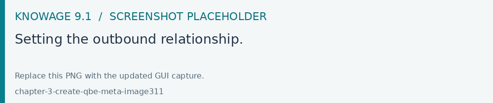
Fig. 425 Setting the outbound relationship.
In Figure above the outbound relationship is shown. Here you have to:
enter the business relationship name,
select the cardinality of the relationship (1 to N is suggested),
select the Source and Target Business Classes,
drag and drop an attribute from the source Business Class to another attribute in the target Business Class. This will create a link between the two attributes.
When all these steps are accomplished, click Create to save the new relationship.
From the example you see that the cardinality of the outbound relationship can be of two types:
1 to N,
1 to N*.
Use the second type of cardinality when the type of cardinality can be optional.
As well, the cardinality of the inbound relationship can be of two types:
N to 1,
N* to 1.
Use the second type of cardinality when the type of cardinality can be optional.
SQL Filter
There is a new feature that is added in meta web. It is SQL Filter which we can define in Filter tab in meta web as you can see in the figure below. SQL Filter is used for applying already defined drivers in query.
SQL filter is expression that is added in the end of query as part of where clause. The right syntax for sql filter is: column_name = $P{name_of_the_driver}. For example: city = $P{city}. If you want to add more than one filter, you can relate them with an operator (AND, OR…) as you can see in an example in figure below.
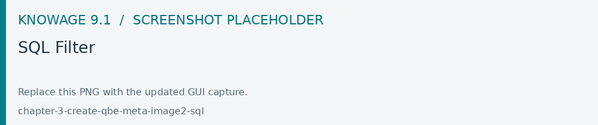
If you want to add filter for multivalue driver the right syntax is this: column_name IN ($P{name_of_the_driver}). For example: city IN ($P{city}).
Create a new business class
In the “Business Model” tab, the Plus icon allows to add new Business Classes (from the tables of the Physical Model) or a Business View (a combination of more tables with a predefined join path).
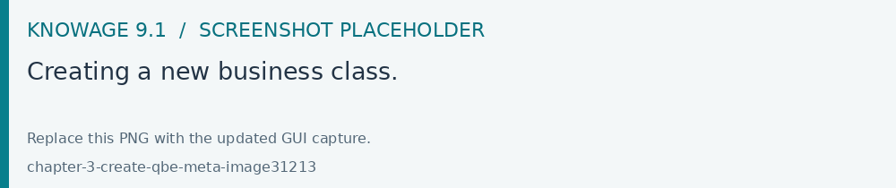
Fig. 426 Creating a new business class.
When clicking on the icon, as shown in Figure above, and selecting “New Business Class”, a new dialog asks to the users to:
select a Physical Table from the available ones;
insert a description for this new business class;
select one or more columns.
Then click on save to add the business class.
Table property list
Scrolling the Property list tab, you can find the Type menu item. The related combobox contains the types to be associated with the tables of your model.
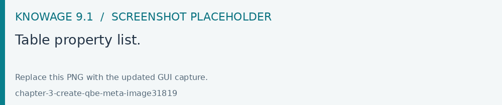
Fig. 427 Table property list.
Column property list
Below the Property tab of a Business Class
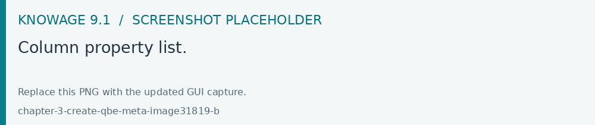
Fig. 428 Column property list.
Click the modify icon to display all the details related to a specific attribute.
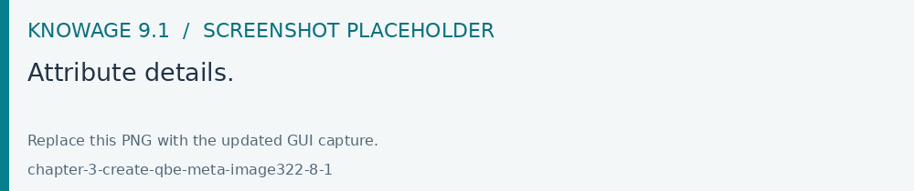
Fig. 429 Attribute details.
The Structural area covers an important role for the field properties. Here the user can set:
Visibility over the field by handling the contents of the field Roles enabled,
Type, among measure, attribute, calendar, temporal_id, the_date and hour_id,
Aggregation type for measure field type,
Format string, to custom the format of the string for measure field type,
Profile attribute, to filter the field (and then the table records) by the user profile attributes (note that the combobox lists the available profile attributes),
Profile attribute filter type, to define the filter operator among “equals to”, “in”, “like”,
Data type, to indicate the field data type.
In the Behavioural Model area, the user can assign the field’s visibility permission to specific roles.
In the Physical area, recalls the physical table and field name from which the field have been take.
Add new column into business class
If you did not choose all the columns from physical table when you were creating new business class, you can do it easily. Click on the business class where you want to add a new column to open the pop up to select the missing columns.
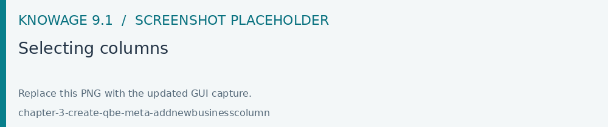
Fig. 430 Selecting columns
If you want to remove columns from a business class just click the Trash icon. .. figure:: /_static/screenshots/9.1/chapter-3-create-qbe-meta-deletebusinesscolumn.png
Deleting a column
To change the order of the columns, you can do it just by using the drag and drop functionality.
Generate the datamart
After the editing of the metamodel, click the Save icon on the Meta Web toolbar on the upper right corner. Now you have a metamodel that can be compiled and used to generate a datamart. Now if you go back to the Business Model catalog you will see that near the “Meta Web” button there is a “Generate” button. Clicking on it, a dialog will open:
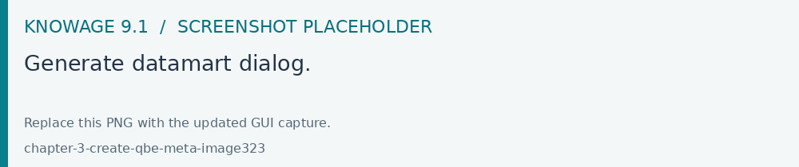
Fig. 431 Generate datamart dialog.
If you just press “Create” the generation of the datamart begins otherwise clicking on the switch “Show Advanced options” (see figure below) the user can modify model name, change the schema or the catalogue of the database used to query the metamodel. This option is useful when the user wishes to build the model on a source schema and produce the datamart on a different one. Furthermore, the user can check the Generate for registry box. In this instance, the generated datamart will be used as a registry (but will not be exploited as a QbE). The Include source code produces a “file.jar” containing both the compiled code (.class) and the source files (.java), useful for the debagging process.
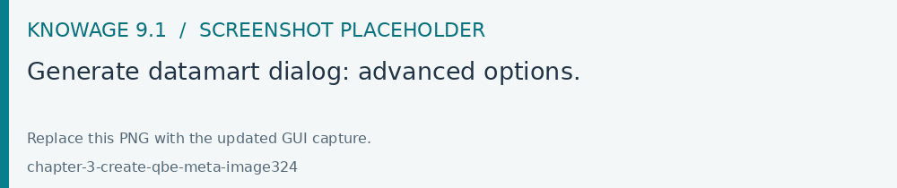
Fig. 432 Generate datamart dialog: advanced options.
When the datamart is generated it will be possible to query the metamodel accessing it in the Workspace interface.
Additional functions for business model
In this section, we briefly describe the generic available options for business model development. Referring to figure below, the user first finds the Lock Model: if enabled, only the user who developed the model can modify it.
Fig. 433 Locking a Business Model.
Once the model has been saved, some more options are enabled. In fact, the user can make advantage of the Metadata section. Clicking the Import metadata button, the metadata information related to the business classes (their composition, properties, etc.) are stored into the (metadata) Knowage database. Those information can then be visualized via specific document (developed for the data lineage context).
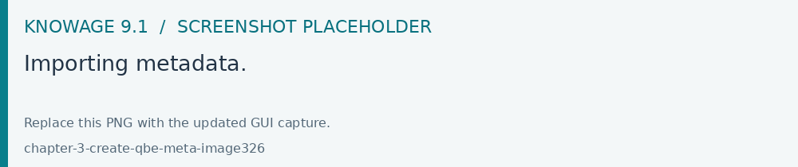
Fig. 434 Importing metadata.
Finally the Saved versions section the user keeps trace of model changes over time. Furthermore it is possible to restore old versions by checking the active column. Selecting the “three-dots” icon the user can download the jar file or the model itself or delete the version. Figure below shows an example.
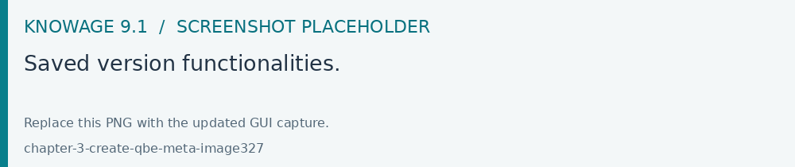
Fig. 435 Saved version functionalities.